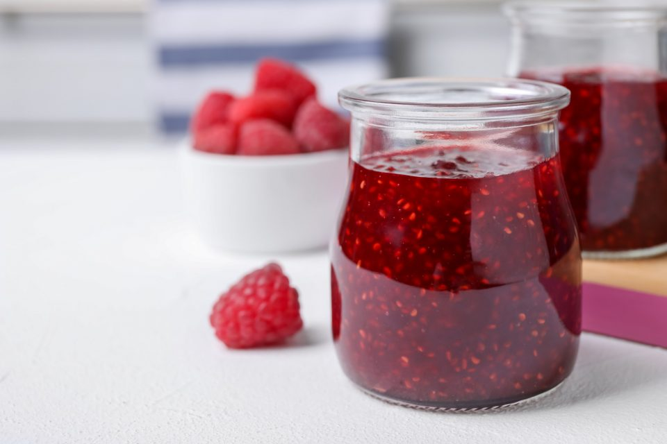

Przepis na kisiel, taki typu dobry
 Zdjątko takiego pysznego kisielu domowego, który moesz sobie na czillku zrobić i będzie bardzo smaczny, zaufaj mi.
Opis
Tutaj niewiele bedzie nam potrzebne bedzie. Nalezy kupic kisiel wlasnego wybroru w sklepie, znajdziecie go w kazdym spozywczym wydaje sie dla mnie
Gdy juz kupicie i wrocice do domu, przygotujcie sobie kilka rzeczy w kuchni potrzebnych, poniewaz samymi rekoma nie wykonacie tego przepisu, zaufajcie mi, probowalem.
Co potrzebne? Czyli krotko o skladnikach
Warto pamietac, ze dany przepis jest tylko na statystyczna saszetke kisielu, czyli na 0.5 kisielu.
- 0.5l wody
- 3-4 lyzki cukru
- Sam kisiel ze sklepu, ktory kupiliscie
Kroki, czyli jak i po kolei
- Odmierz 0.5l wody
- Nalej 2/5 wody do kubka, reszte nalej do garczka
- Zacznij gotowac wode, do czasu az bedzie bulgotac niezle
- Podczas gdy on sie gotuje, a raczej powoli zmierza do stanu zagotowania, wsyp do kubka zawartosc saszetki kisielu oraz dodaj 3-4 lyzki cukru, w zaleznosci jak bardzo slodki kisiel lubisz
- Gdy woda sie zagotuje, wlej zawartosc kubka do gotujacej sie wody w garczku
- Mieszaj chwile, az sam kisiel nie bedzie bulgotac oraz gdy po prostu stwierdzisz "dobra, wymieszany jest dobrze"